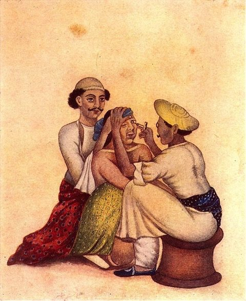

Last updated: October 2026
The milestones and people behind modern ophthalmology, arranged as timelines by subspecialty, followed by short profiles of the pioneers and the people behind the eponyms we use every day.
| Year | Who | Milestone |
|---|---|---|
| c. 600 BCE | Sushruta | Couching for cataract described in the Sushruta Samhita |
| 1747 | Jacques Daviel | First planned extracapsular cataract extraction |
| 1949 | Harold Ridley | First intraocular lens implanted (29 November, St Thomas' Hospital, London) |
| 1967 | Charles Kelman | Phacoemulsification introduced (first reported 1967–68) |
| 1972 | Endre Balazs | Coined "viscosurgery"; sodium hyaluronate (Healon) followed |
| 1980 | Danièle Aron-Rosa | Nd:YAG laser posterior capsulotomy shown to be safe and effective |
| 1984 | Thomas Mazzocco | First foldable (silicone) IOL |
| 2001 | AMO; Alcon | WhiteStar micropulse phaco (heat reduction) and NeoSoniX oscillation |
| 2005 | Alcon | Torsional phaco (OZil): side-to-side tip motion, much less heat (Mackool) |
| 2000s | Alcon | AquaLase: liquefaction with warm saline pulses (from the Andrews' phaser technology) |
| 2009–10 | LenSx and others | Femtosecond laser-assisted cataract surgery |
| Year | Who | Milestone |
|---|---|---|
| 1884 | Carl Koller | Topical cocaine: the first local anaesthetic for eye surgery |
| 1986 | Davis and Mandel | Peribulbar anaesthesia |
| 1990s | Greenbaum; Stevens | Sub-Tenon anaesthesia with a blunt cannula |
| 1992 | Fichman | Phaco under topical anaesthesia (tetracaine 0.5%) |
| Year | Who | Milestone |
|---|---|---|
| Early 1700s | de Saint-Yves | Retinal detachment described at post-mortem |
| 1817 | Georg Beer | First clinical description of retinal detachment (before the ophthalmoscope) |
| 1851 | Hermann von Helmholtz | Direct ophthalmoscope (Charles Babbage built one in 1847 but it was ignored) |
| 1861 | Giraud-Teulon | Binocular indirect ophthalmoscope, overlooked for decades |
| 1869 | Iwanoff | Posterior vitreous detachment described |
| 1900 | Alexios Trantas | Scleral indentation (with a fingernail) |
| 1911 | Ohm | Intravitreal air for retinal detachment |
| 1920s | Jules Gonin | First successful RD repair by closing the break (ignipuncture) |
| 1933 | Bietti | Cryotherapy for RD, popularised by Lincoff (1964) |
| 1937 / 1949 | Jess; Custodis | Scleral buckling described, then developed |
| 1938 | Rosengren | Internal tamponade with air |
| 1940s | Charles Schepens | Self-illuminated binocular indirect ophthalmoscope; modern scleral buckling |
| 1956 | Gerd Meyer-Schwickerath | Xenon-arc photocoagulation, later the basis of diabetic retinopathy treatment |
| 1962 | Paul Cibis | Silicone oil tamponade |
| 1970 | Robert Machemer | Pars plana vitrectomy; longer-acting expansile gases followed |
| 1980 | Webb and colleagues | Scanning laser ophthalmoscope ("flying spot" TV ophthalmoscope) |
| 1985 | Hilton and Grizzard | Pneumatic retinopexy named and reported |
| 1991 | Huang, Fujimoto and colleagues | Optical coherence tomography |
| 2004–06 | Various | Anti-VEGF era: pegaptanib, bevacizumab (off-label), ranibizumab |
| 2017 | Spark Therapeutics | Voretigene: first approved gene therapy for an inherited retinal disease (RPE65) |
| Year | Who | Milestone |
|---|---|---|
| 1856 | Albrecht von Graefe | Iridectomy for acute glaucoma; also introduced clinical perimetry |
| 1862 | Douglas Argyll Robertson | Physostigmine (Calabar bean) as a miotic; von Graefe used it in iridectomy |
| 1907–14 | Trantas; Salzmann | Gonioscopy named and the goniolens designed |
| 1955 | Hans Goldmann | Applanation tonometer (Goldmann also designed the kinetic perimeter, 1945) |
| 1968 | Cairns | Trabeculectomy |
| 1969 | Anthony Molteno | Glaucoma drainage implant |
| 1989 | Pavlin, Sherar and Foster (Toronto) | Ultrasound biomicroscopy |
| 1995 | Mark Latina | Selective laser trabeculoplasty |
| 1996 | Latanoprost | First prostaglandin analogue for glaucoma |
The terms "open-angle" and "closed-angle" glaucoma were standardised at an international symposium organised by the Council for International Organizations of Medical Sciences (CIOMS).
| Year | Who | Milestone |
|---|---|---|
| 1789 | Pellier de Quengsy | Glass keratoprosthesis proposed |
| 1905 | Eduard Zirm | First successful human full-thickness corneal transplant (Olomouc) |
| 1930s | Ramon Castroviejo | Refined keratoplasty technique and instruments (square grafts) |
| 1944 | R. Townley Paton | First eye bank, New York |
| 1949–64 | José Barraquer | Keratomileusis, microkeratome and cryolathe: the basis of LASIK |
| 1981–83 | Rangaswamy Srinivasan; Stephen Trokel | Excimer ablative photodecomposition; corneal excimer ablation |
| 1990 | Pallikaris; Buratto | LASIK |
| 2001 | IntraLase (Kurtz, Juhasz) | Femtosecond laser LASIK flaps |
| 2003 | Wollensak, Spoerl and Seiler | Riboflavin–UVA corneal cross-linking |
| 2011 | Sekundo, Shah | SMILE (small-incision lenticule extraction) |
| Year | Who | Milestone |
|---|---|---|
| 1839 | Johann Dieffenbach | First successful strabismus operation |
| 1903 | Claud Worth | Grades of binocular vision; Worth four-dot test |
| 1904 | Addeo Toti | External dacryocystorhinostomy |
| 1930s | Mary Maddox | First orthoptic clinic, London |
| 1946 | Alfred Bangerter | Coined "pleoptics" (active amblyopia treatment) |
| 1956–61 | Curt Cüppers | Euthyscope and visuscope for eccentric fixation |
| 1958 | Marshall Parks | Parks three-step test; founded paediatric ophthalmology as a subspecialty |
| Pioneer | Years | Known for |
|---|---|---|
| Allvar Gullstrand | 1862–1930 | First (and only) ophthalmologist to win a Nobel Prize (1911), for the dioptrics of the eye; slit lamp |
| Hermann von Helmholtz | 1821–1894 | Ophthalmoscope (1851), ophthalmometer, theory of accommodation, Young–Helmholtz colour theory |
| Sir Stewart Duke-Elder | 1898–1978 | System of Ophthalmology (15 volumes); founded the Institute of Ophthalmology, London |
| Sir Harold Ridley | 1906–2001 | The intraocular lens, inspired by PMMA canopy fragments tolerated by injured RAF pilots; knighted 2000 |
| Charles Schepens | 1912–2006 | "Father of modern retinal surgery"; Schepens Eye Research Institute, Boston |
| José Ignacio Barraquer | 1916–1998 | Father of refractive surgery; Barraquer Institute, Bogotá |
| Marshall M. Parks | 1918–2005 | Father of paediatric ophthalmology |
| A. Edward Maumenee | 1913–1998 | Director of the Wilmer Eye Institute (1955–79); helped found the National Eye Institute (1968) |
| Ramon Castroviejo | 1904–1987 | Corneal transplantation pioneer; many instruments carry his name |
| Lorenz Zimmerman | 1920–2013 | Ophthalmic pathology at the Armed Forces Institute of Pathology for 29 years |
| J. Donald M. Gass | 1928–2005 | Macular disease and fluorescein angiography; Stereoscopic Atlas of Macular Diseases |
| Traquair | 1875–1954 | Described the visual field as "an island of vision in a sea of blindness" |
Czech physiologist known for Purkinje cells (cerebellum), Purkinje fibres (heart) and the Purkinje images. He founded the world's first department of physiology (Breslau, 1839), introduced the term plasma, described sweat glands and recognised fingerprints as a means of identification. He studied vision by experimenting on himself, even with belladonna, and was a friend of Goethe and a translator of Schiller and Shakespeare into Czech.
German anatomist behind Henle's fibre layer, Hassall–Henle bodies and the loop of Henle. His Allgemeine Anatomie was the first systematic work on histology, and he was among the first to use the term "cell". A talented musician, he was briefly imprisoned in 1835 for his liberal politics.
Physician and physicist who invented the ophthalmoscope while preparing a lecture in 1850 to explain the glow of animals' eyes. On 17 December 1850 he wrote to his father that he had made "a discovery which may be of the utmost importance in ophthalmology". On first seeing the living fundus, von Graefe is said to have exclaimed, "Helmholtz has unfolded to us a new world!"
Scottish ophthalmologist and pupil of von Graefe who described the small, irregular pupils of neurosyphilis that accommodate but do not react to light. In 1862 he dropped Calabar bean extract into his own eye and showed that physostigmine constricts the pupil. He died in 1909 at Gondal, in Saurashtra (Gujarat), while visiting his friend the Thakore Sahib of Gondal, and was cremated there.
Where residents slip
Related: Fathers of ophthalmology, Nobel Prize winners, Instruments: who invented what, Famous people with eye problems.
📘 Want the exam-ready deep dive? This topic, and much more is covered in Ophthalmology Explorer (A High-Yield Clinical Reference for Ophthalmology Residents, Fellows & Board Exams) — available on Kindle. See all my books.
Experiencing symptoms like these? Learn about our Eye Department or book a consultation with Dr. Dhaval Patel.